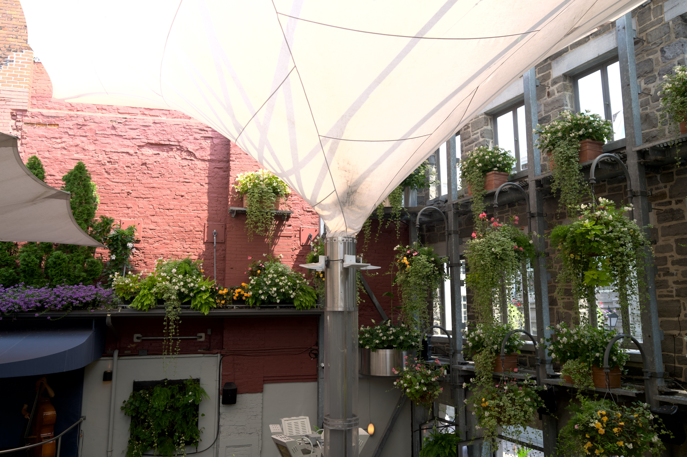
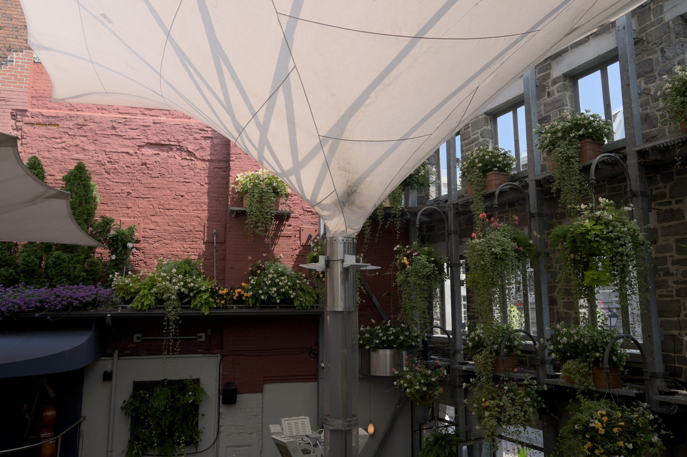

“On highlight headroom, HDR displays, and the file format that is holding photography back”
Every photographer has learned to pull up shadows. It is the first thing anyone does with a RAW file: drag the shadow slider right, watch detail appear out of the murk, feel good about how much the sensor captured.
Almost nobody looks the other way.
There is as much as 4 stops of information above SDR white in a typical RAW file — real colour, real detail, real gradation — and a traditional export throws every bit of it away. Not compresses it. Throws it away. Those specular highlights on water, the sun flaring off glass, the inside of a sunlit cloud, the neon sign at dusk: your sensor recorded them. Your JPEG did not.
We call the result "blown highlights" and treat it as a fact of photography. It is not. It is a property of the file format we chose to save into.
The blind spot has an honest origin. For thirty years the output was SDR — a print, or a screen that could show roughly six stops. When the destination cannot represent anything above diffuse white, there is nowhere to put those extra stops, so the entire imaging pipeline was built to discard them early and gracefully. Highlight roll-off, that gentle shoulder we all learned to love, is a compression strategy: it takes information you cannot display and squeezes it into a range you can.
That was the correct engineering decision. The constraint that justified it is gone.
The habit outlived it. We still expose to protect highlights we could now keep. We still evaluate images on displays that cannot show what we captured. We still export to a format designed around a limitation our hardware no longer has.
This is what makes the argument urgent rather than theoretical. Every M-series MacBook Pro has an XDR display. Recent iPhones and iPads have HDR screens. You are not waiting for new hardware — you are probably reading this on it.
The displays arrived first, quietly, and the photographs never followed.
The term needs rescuing, because it has meant three different things and two of them are not this.
It does not mean the tone-mapped look of 2012 — the grey skies, haloed edges and crunchy local contrast that gave "HDR" its bad name. That was an attempt to cram high dynamic range into a low dynamic range file, and it looked like it.
It does not mean an exposure blend, where you merge brackets to recover a scene one frame could not hold.
True HDR is simpler and less dramatic: the scene's actual range, delivered to a display that can actually show it. No tricks, no local contrast games. A highlight that was four stops brighter than white in the world is four stops brighter than white on your screen. It looks normal — which is precisely the point. It looks like the scene did.

SDR. Highlights clipped to white. This is what a conventional JPEG export preserves. Click for full size.

HDR. The same RAW file, same processing, exported as a gain-map JPEG. Colour and detail survive where the SDR version has only white. Click for full size.
This is the strongest objection and it deserves a straight answer: correct. You cannot print an HDR image. Ink on paper has a contrast ratio, and it is not going up.
But look at where photographs are actually seen now. Sharing has moved to mobile, and mobile devices overwhelmingly have HDR displays. The photograph you post is far more likely to be viewed on an OLED phone held at arm's length than on any print. If you are optimising for the medium your audience actually uses, HDR is not a niche — it is the common case, and SDR is the compromise.
Print remains print. Nothing about shooting for HDR stops you making an SDR rendering for paper; that is a single export away. The reverse is not true. Save an SDR JPEG and those four stops are gone for good.
So how do those highlights reach someone else's screen? This is where the format question finally matters, and where the industry has partly gone the wrong way.
HEIF with an HLG transfer function — the route several manufacturers took — has two failure modes. Outside Apple's ecosystem the file is often simply unopenable. And on an SDR screen it does not degrade to something correct; it degrades to something wrong, washed out and flat, because the viewer has no idea how to interpret the transfer function. A format that looks broken to half your audience is not a sharing format.
JPEG with a gain map (standardised as ISO 21496-1) solves exactly this. The file is an ordinary JPEG plus a small auxiliary image describing, per pixel, how much brighter the HDR rendering should be. An SDR viewer sees a completely normal photograph and never knows the gain map is there. An HDR viewer applies it and sees the full range. One file, correct everywhere, no forked workflow.
JPEG XL is the best long-term answer for capture and archival — small, full colour depth, HDR throughout, lossy like JPEG but at far higher quality per byte. It is the format RAW should eventually give way to. It is not, today, a delivery format: Safari decodes it natively, but Chrome still hides it behind a flag and Firefox does the same, so most of your audience cannot see a JXL file at all.
These are not competing choices. Gain-map JPEG solves sharing now. JPEG XL solves archival later.
Think about where the dynamic range actually goes on a shoot today. Your eye sees a scene with enormous range. The sensor captures most of it. Then you compose that scene through an SDR electronic viewfinder, check it on an SDR rear screen, and save it to a file format that discards the top four stops — before finally viewing it on a display that could have shown you all of it.
Every link in that chain is capable except the ones inside the camera.
That is worth sitting with, because it reframes the problem. This is not a missing feature. It is the only remaining bottleneck in an otherwise HDR-ready pipeline: Apple ships XDR displays on every MacBook Pro, plenty of third-party monitors do HDR, the operating systems support it, phones already shoot it, and the viewing and editing software exists. The camera industry is the last holdout in a chain that everyone else has already upgraded.
Here is the part camera makers should care about most, and it is commercial rather than technical.
Mirrorless bodies and sensors have become extraordinary. Autofocus is uncanny, stabilisation is remarkable, resolution and burst rates long ago passed what most photographers need. Which raises an awkward question for anyone selling cameras: what is left to put on the box? The spec race that drove upgrades for a decade is largely finished. Existing owners look at a new body and struggle to justify it.
HDR is the answer sitting in plain sight. It is not an incremental half-stop of something; it is a visibly different photograph, on hardware customers already own. And it is a genuine product generation:
That is a headline feature set, not a firmware footnote. It gives a manufacturer something to demonstrate on a shop floor that a customer can see in a single glance — which is exactly what the current generation of bodies lacks.
Now: write JPEG + gain map in-camera. The usual objection is pipeline cost — can a camera really do this at burst rates? It already can. A gain map is a ratio between the SDR and HDR renderings, quantised to 8 bits and downsampled; it rides the JPEG encoder every camera already has, rather than requiring a new codec block. And the proof is in everyone's pocket: phones have been producing gain-map HDR stills at capture rate for years, on a fraction of the silicon a flagship camera carries. If a phone can do it in a burst, so can a camera with a dedicated image processor.
Next: HDR EVFs and rear screens. This one is real hardware and real cost, and it is also the part that sells bodies. Shooting HDR through an SDR viewfinder is like mixing a record on headphones that cannot reproduce bass — you can do it, but you are working blind in exactly the region you are trying to control.
Sony has come furthest here, and the A7R VI is worth studying precisely because it gets so much right. It is the first camera with an HDR-capable viewfinder — 10-bit HLG, DCI-P3, roughly three times brighter than its predecessor — and it captures HDR stills. That is the correct direction, and it makes the rest of the industry's position harder to defend.
It also shows how easily you can build half a workflow. The viewfinder shows you high dynamic range, but the histogram beside it still measures SDR — so you can see the highlight range and have no way to measure it, which is the one thing a histogram exists to do. And the file it writes is HEIF with the HLG curve: the format that will not open reliably off an Apple device and degrades wrongly rather than gracefully. Sony solved the expensive part, the display, and then handed the result to the delivery format most likely to strand it.
Note what that first gap is not: a hardware limitation. The panel already renders high dynamic range; teaching the histogram to measure it is a firmware question. The most valuable HDR feature Sony could ship next may cost nothing to manufacture.
That is not a criticism of a good camera so much as a description of the opportunity. The hardware is already arriving. What is missing is the rest of the chain around it — the metering that matches the viewfinder, and an output format that survives the trip to someone else's screen.
Later: JPEG XL as the archival format. Here the engineering objection is real and worth stating honestly — software JXL encoding is slow, and doing it at capture rate plausibly requires dedicated hardware. That is a genuine ask with a genuine cost, and it will take a product cycle or three. It is still the right destination: small files, full colour depth, HDR throughout, in the role RAW occupies now.
The near-term request is the modest one. The bits are already in the file. The encoder is already in the camera. The displays are already in our hands. What is missing is a menu item.
It is 2026. Photography spent the better part of a decade with "HDR" meaning a garish, over-processed look, because that was the only way to hint at high dynamic range inside a low dynamic range file. That constraint is gone, the hardware is on desks and in pockets, and the real thing looks nothing like the parody. There is no good reason for the picture to still stop at SDR white.
You do not have to wait for any of this to see what your own files contain.
ApolloOne's HDR Visualizer was built for precisely this question. It overlays four false-colour bands on the image — cyan at +1 EV, blue at +2, purple at +3, magenta at +4 — so you can see exactly which highlights push past SDR white and by how much. Hover any pixel and the inspector reads out per-channel headroom to a tenth of a stop. Open a RAW file you shot last year and look at how much of it you have never seen.
When you want to share what you find, ApolloOne exports full HDR to AVIF or JPEG XL in PQ, and gain-map JPEG or HEIC that stay correct on SDR displays. Camera RawX brings HDR previews to Quick Look for RAW files macOS cannot open on its own. And ApolloOne GO puts the same HDR rendering on an iPad or iPhone, so you can judge the real range of a shot in the field — on the kind of display you will probably end up sharing it on.
Every HDR image on this page was exported from ApolloOne as a gain-map JPEG. That is the whole argument in one file: it looks right on your phone, it looks right on your laptop, and if your screen can show you those four stops, it just did.